阶段 01
拼团开始
受害人通过小红书、微信、QQ群等渠道了解到处方笺正在开展“明日方舟”“重返未来”等二次元 IP 周边产品拼团活动。 参与者通过小程序“群拼谷助手”浏览团购商品，并登记购买需求，供处方笺进行后期下单数据统计。
群聊与身份信息：
- 团购参与 QQ 群：`1046515873`
- 群主“处方笺”QQ：`2141379332`
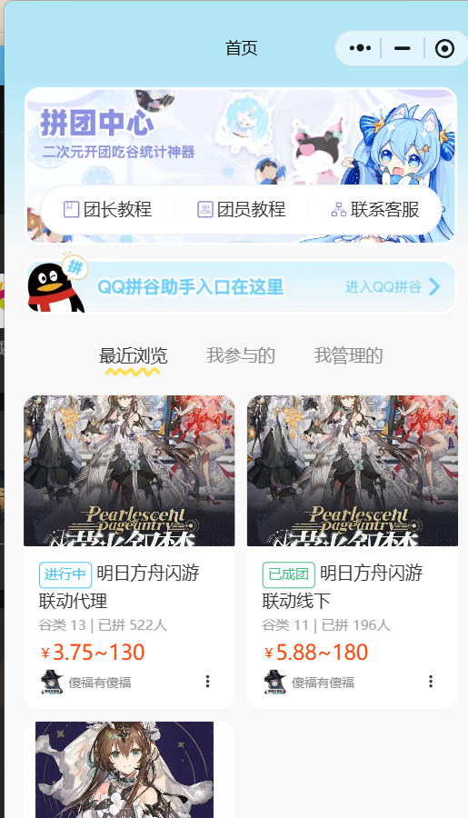
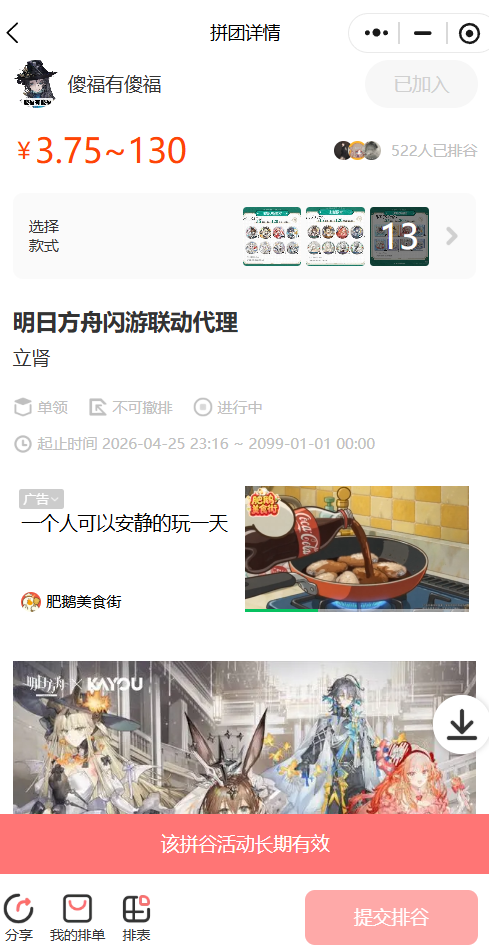
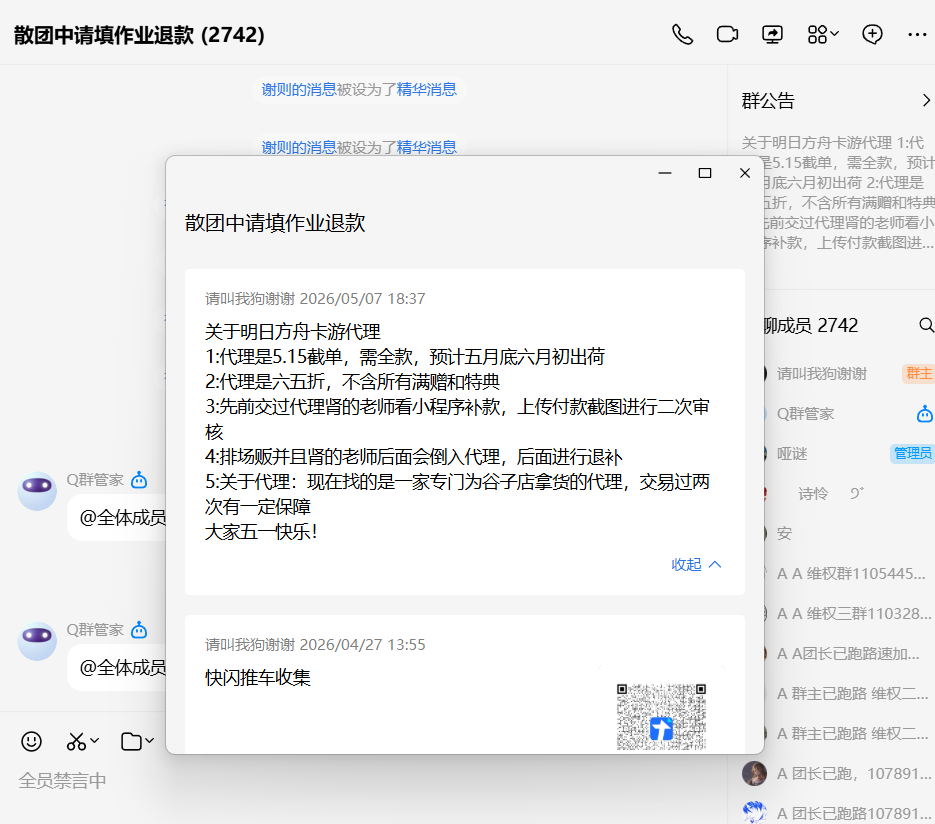
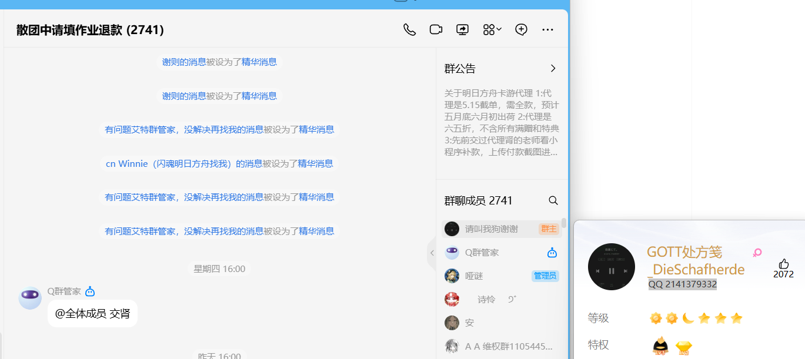
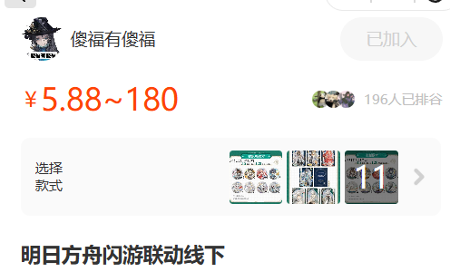
案件影响
以下以真实中国地图叠加省份气泡的方式展示统计情况，气泡大小代表受害人数，颜色深浅代表涉案金额，金额按千位缩写显示。
案发经过
受害人通过小红书、微信、QQ群等渠道了解到处方笺正在开展“明日方舟”“重返未来”等二次元 IP 周边产品拼团活动。 参与者通过小程序“群拼谷助手”浏览团购商品，并登记购买需求，供处方笺进行后期下单数据统计。
群聊与身份信息：




处方笺在 QQ 群相册中提供支付宝、微信支付码，提前收取受害人拼团订单款项；同时还提供微信付款群， 通过群收款、转账等方式收取受害人拼团订单款项。
转账完成后的流程：
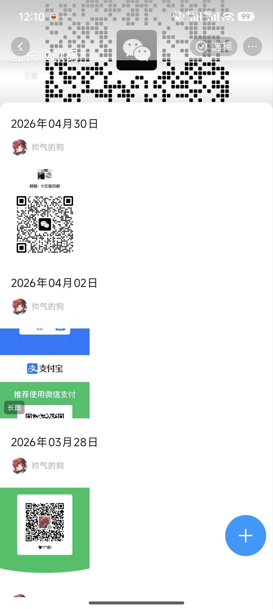
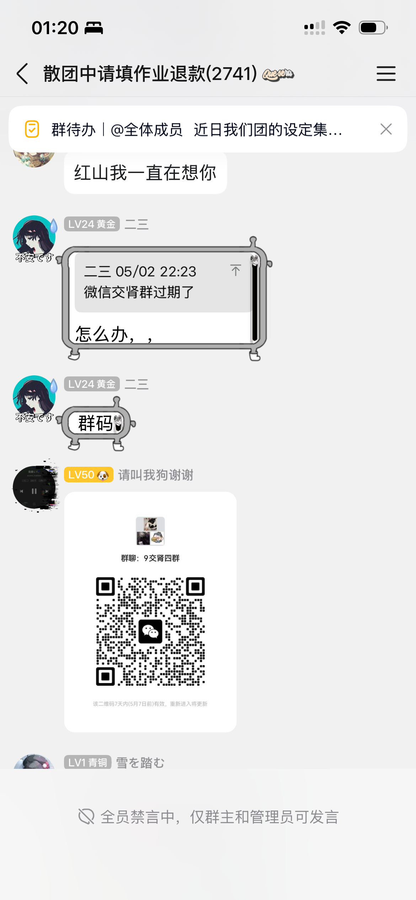
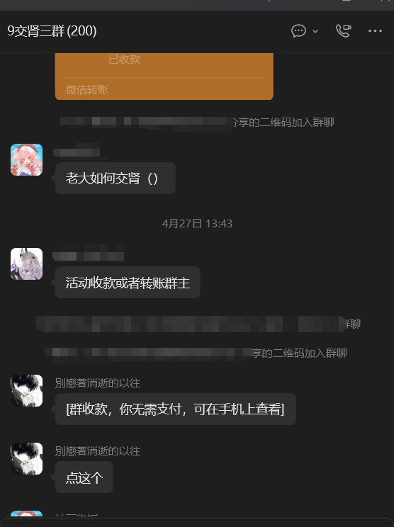
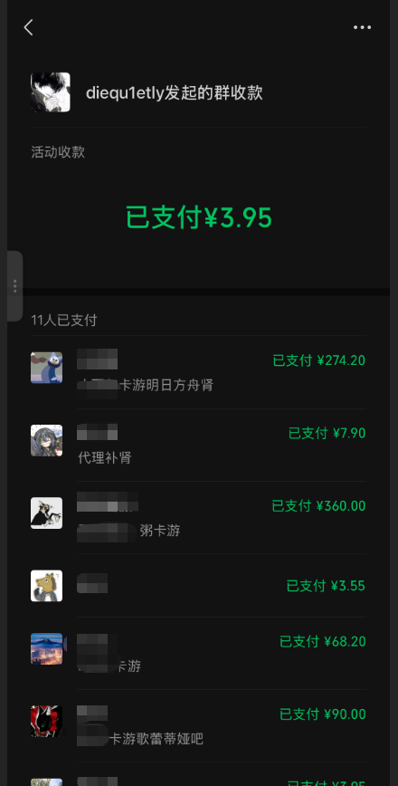
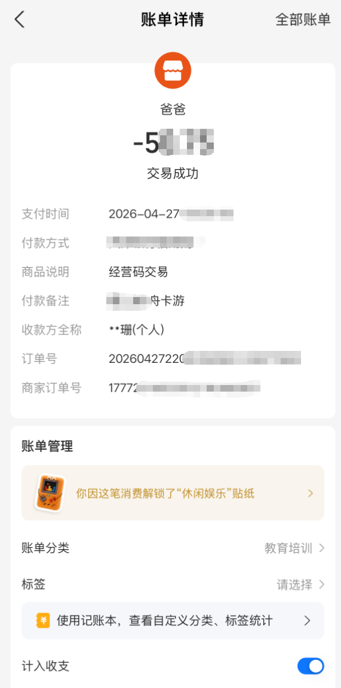
处方笺发布与代理商及线下下单视频、截图后，部分受害人开始质疑其下单真实性。随后处方笺发布终止团购意向， 并表示会在两天内退款。
后续结果：
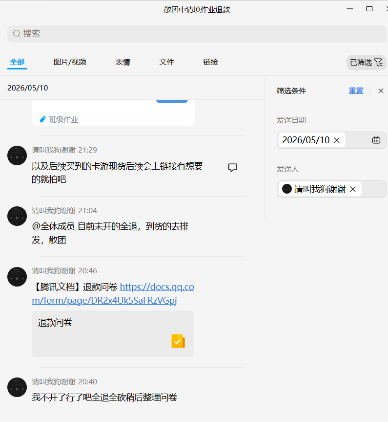
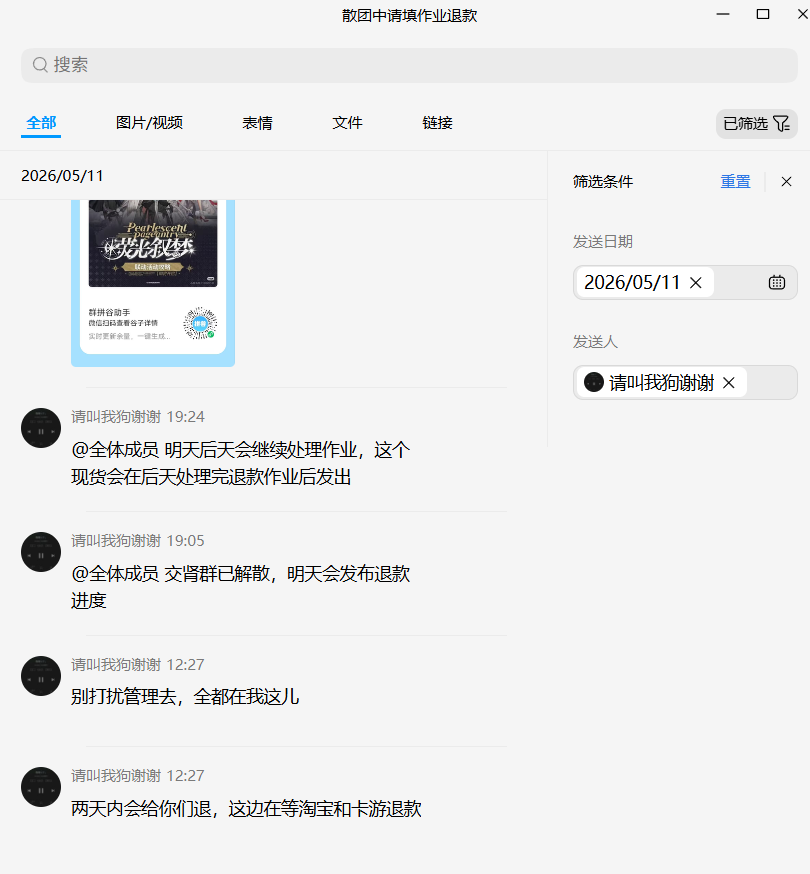
案件目前状态
由于受害人分布全国各地，导致案件追踪与受理难度极大。目前主要三个受害人集中区域的维权情况如下。
江浙沪
5.15
大金额受害人在上海南京东路派出所立案行政案件。
5.16
江苏淮安受害人已完成立案。
广东
5.21
广东地区案件推进出现重大突破，已进入刑事立案阶段。
5.16
无水硫酸铜老师与小七老师已从深圳前往河源报警。河源警方答复：因目前全国各地区尚未完成报案汇总，他们还未掌握具体总金额情况；可以先按刑事事件把处方笺控制起来，但现在更关键的是每个人先去自己附近的派出所报警，尽快报警，火速报警。
北京
5.16
若无法立刑事，将正常提交第一批证据。
报案流程
受害人自身准备
管理员可提供
带着自己的材料前往转账地所属派出所报案，优先选择家附近或就近的 “枫桥式公安派出所”。
向警察讲清事情经过并做笔录，把拼团黑话转换成警方能听懂的表达，可参考本页“案发经过”。
必须明确提到并主动索要《受案回执》，上面会有案件编号，后续查询进度要用。
注 全程当作正常报案，不管立不立案、并不并案，都要拿到回执。有受案回执就能进内网，后续合并的问题由河源警方负责。
受害人如何参与
警方呼吁大家尽量前往各自辖区所在的派出所进行报案； 无论金额大小，所有受害人一起行动才能看到成功的希望。
准备支付银行流水记录、拼团下单截图、群收款转账记录。
前往受害人所在辖区范围内的街道公安派出所，接受警方对于事件详细经过的问询。不用恐慌和害怕，如实叙述，你是受害者，你提供的所有细节都会为案件提供帮助。
建议新受害人先阅读本页，再加入群或联系整理人，避免信息断层和重复提问。同时，报案时如有反馈也欢迎继续提供。
疑问与回答
A：这是一个集中整理信息的页面，用来说明案件经过、进展和参与方式，不代替正式法律意见。
A：警方说诈骗不论金额，就算是 1 块钱也都可以，诈骗不论金额都可以行政立案。后续证据充足可以立刑事。
A：未成年人有报警权，警察不能拒绝你报案。只是做正式笔录时，警察会通知监护人到场保护你，不是不让你报。
A：网络诈骗没有短期报案过期一说，6 月再报完全合法有效。你可以先直接拨打 110 口头报备，也可以通过国家反诈中心 APP 线上提交举报。
110 话术参考：“民警您好，我在校大学生遭广东河源网络诈骗被骗一百多元，已知两千余人受害总涉案二十多万，近期学业忙没空线下，预约 6 月份抽空到就近派出所正式做笔录立案，先电话登记留存被骗事实与证据，麻烦先录入预警台账。”
国家反诈中心 APP 提交时请填写完整信息，并备注：本人在校不便线下，计划 6 月前往派出所补正式报案笔录，完成线上备案锁定案情。
A：请所有愿意线下报警的人在自己的 IP 群联系各 IP 负责人领取刑事控告书，并提供订单截图、付款信息进行自证。由于身份信息保密，刑事控告书无法发在大群。
A：受案和立案是不一样的。受案是你带着证据去报警并报“网络诈骗”后，警察审核证据与诉求，接受了就应该给受案通知；有受案通知后，后续才会并案推进。
A：像律师说的，真到了刑事那一步警方通常不会太看委托书。河源警方也明确表示：必须本人去报警，必须带上手机方便信息采集，等行政立案后，你的金额才会被算进处方笺诈骗金额总数里。
A：要的！！如果最后能刑事，那么最后所有线下报警行政立案的总金额，才是最终处方笺被诈骗的总金额，这会影响处方笺后续判刑！而且你只有行政立案了，后续处方笺才有可能给你还钱并进入强制执行流程！
其余待更新...
联系方式
维权群
补充说明
建议新受害人先阅读本页内容后再入群，便于统一了解案件经过、报案建议与当前进展。